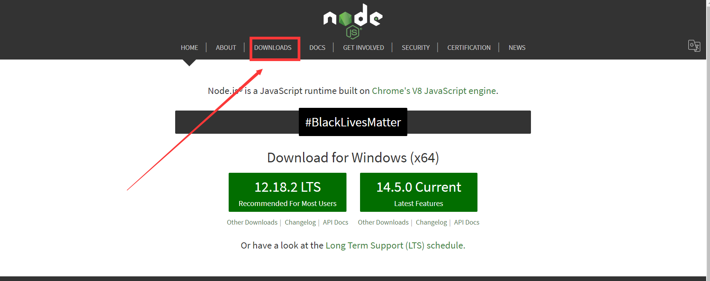
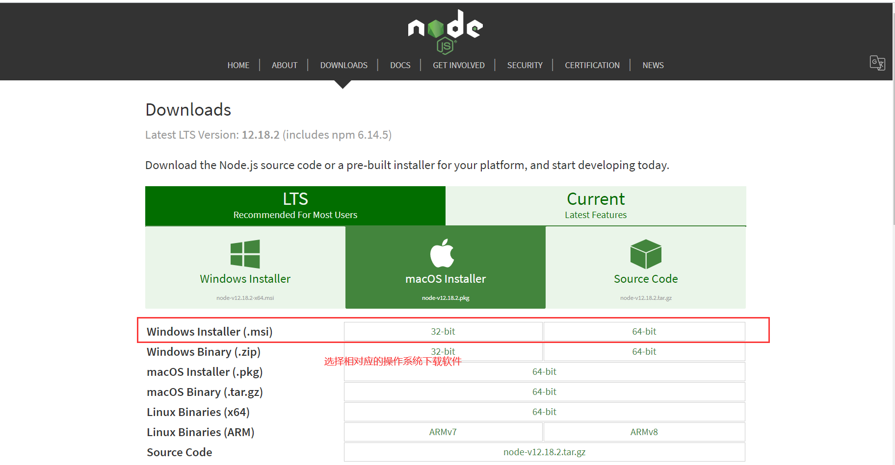
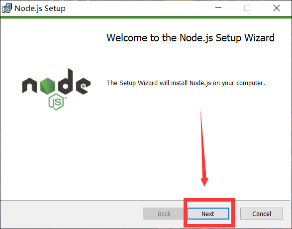
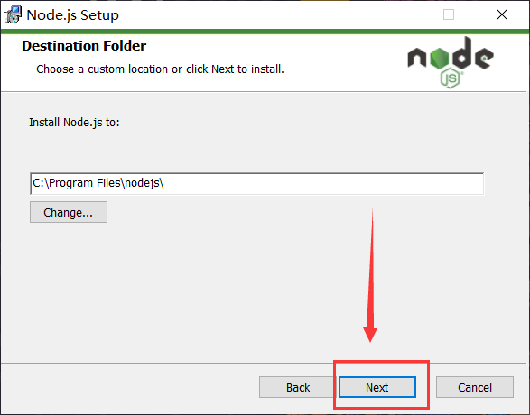
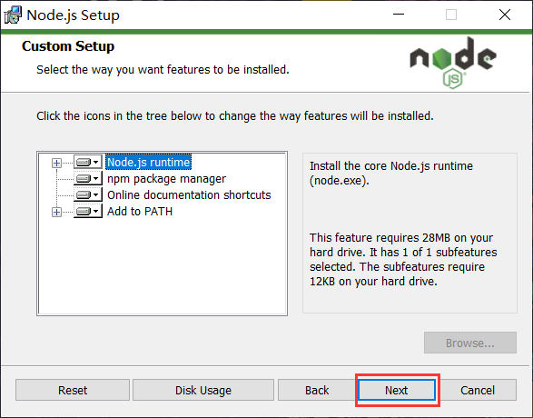
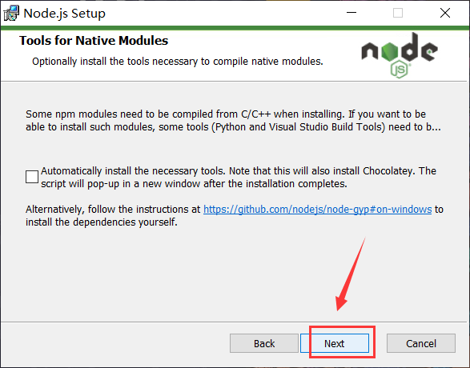
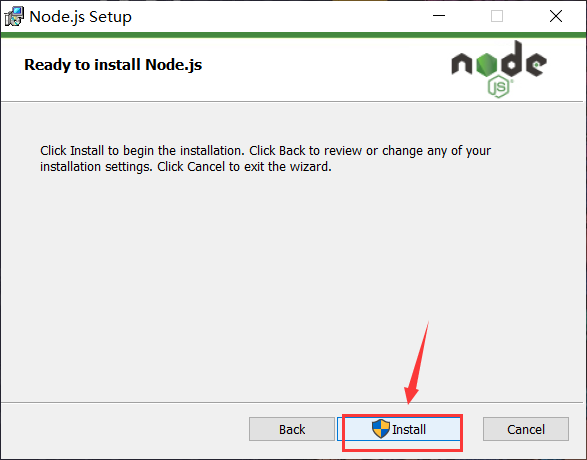
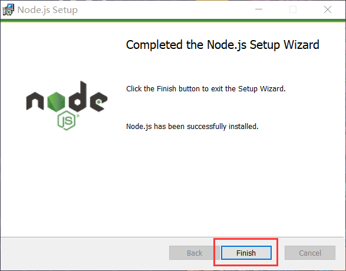
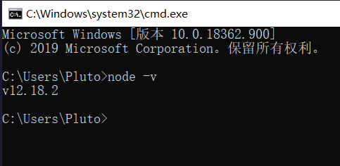

第1章 安装node.js
1. 下载安装包
下载地址：https://nodejs.org/zh-cn/download/ ,根据自己电脑系统及位数选择，我这里选择windows64位.msi格式安装包
.msi和.zip格式区别： 1、.msi是Windows installer开发出来的程序安装文件，它可以让你安装，修改，卸载你所安装的程序。说白了.msi就是Windows installer的数据包，把所有和安装文件相关的内容封装在一个包里。 2、.zip是一个压缩包，解压之后即可，不需要安装  
下载完成后，双击安装包，开始安装，一直点next即可，安装路径默认在C:\Program Files下，也可以自定义修改






我们可以直接在CMD窗口中任意位置执行node，打开CMD窗口，执行命令node -v查看node版本
